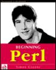

Perl
All big businesses use perl. You will be surprised to find out how many well
known businesses run their high-traffic sites on Perl. Amazon, Adobe, Macromedia,
CitySearch, ValueClick, Morgan Stanley, etc. See some examples:
Perl is a backbone of many production systems in big financial firms (Morgan
Stanley, Goldman Sachs, Solomon Smith Barney, Merrill Lynch, Jefferies and Co.,
Lehman Brothers, Bloomberg - just to name few) and of some biggest online business (Amazon, eToys, etc.). Here
are more examples:
- http://www.activestate.com/Products/PerlDirect/
- PerlDirect - Pre-validated, quality-assured Perl for corporations that rely
on Perl for high-usage applications.
* http://www.yapc.org/America/reports.shtml-
latest YAPC notes, photos, mp3
* www.perl.com/pub/doc/manual/html/pod/perlfunc/
- alphabetical list of functions
* www.perl.com/pub/doc/manual/html/pod/perlfunc.html
- perl functions by category
* www.perldoc.com
- perl docs
* www.perldoc.com/cpan/
- modules docs (not all, good formatting).
* www.perldoc.com/perl5.6/lib.html
- list of ~ 300 modules for perl 5.6.
CPAN - Comprehensive Perl Archive Network
* http://search.cpan.org/
-
* http://search.cpan.org/Catalog/World_Wide_Web/HTML/
-
To go to a particular module - just put it as a parameter in URL, for
example:
* http://search.cpan.org/search?module=HTML::Template
- HTML::Template
* http://search.cpan.org/search?module=CGI::Application
- CGI::Application
Links to docs for some modules:
Database-related:
When docs are not there - just on go Google
and type name of the file and word "perldoc", for example: perldoc
Carp.pm
Here are examples of docs found using this approach:
LWP library - collection of eight
main modules:
| File, Font, HTML, HTTP, LWP, MIME, URI, and WWW |
The best way to build your web application:
* www.perl.com/pub/v/documentation
- documentation
* www.perl.com/CPAN/doc/manual/html/pod/perl.html
- main manpage
* http://www.perl.com/reference/query.cgi?tutorials
- list of Perl tutorials
* www.perl.com/CPAN/
- CPAN
* www.perl.com/CPAN/doc/FMTEYEWTK/index.html
- Far More Than Everything You've Ever Wanted to Know About...
* www.linguistik.uni-erlangen.de/tree/html/perl5/pod/-
tutorials and references
* language.perl.com/info/documentation.html
-
* www.mit.edu/perl/perl.html
-
Documentation on the prompt (both unix or DOS):
perldoc
-
perldoc -h
-
perldoc perldoc
-
perldoc perlfunc
- built-in funcitons
perldoc -f die
- built-in functions by name
perldoc perlvar
- $_, $@, $|, etc.
perldoc perlre
- regular expressions
perldoc perl
-
perldoc CGI
- CGI.pm by name
perldoc -q CGI
-
Using man command:
to read documentation: pod2man
name.pm | nroff -man | less
to convert man pages to text:
man
comname | col -b > out.txt
| Why camel? It's a horse designed by committee. It's not
graceful, it's not pretty, looks like its cobbled together from bits of
other animals and if you mistreat it it'll spit in your eye. But camels
are surprisingly fast, can carry a heavy load and will happily keep going
long after your horse has died.
The dromedary (Arabian camel, Camelus dromedarius, one hump) and the
bactrian (Camelus Bactrianus, native to the cold
deserts of the Central Asian plateau (Bactria), two humps) are both
varieties of camels. I suspect O'Reilly went with the Arabian camel as
its the one we're used to seeing and, possibly more important where Larry
is concerned, is also the one spoken of in the Bible.- Michael G. Schwern
(www.pobox.com/~schwern/) |
* www.perl.com
- main perl site
* http://dev.perl.org/perl6/
- Perl6 development
* www.perl.org
-
* http://use.perl.org
- perl news (posings running slash 2 software
* http://www.yetanother.org
- Yet Another Society
* http://dbi.symbolstone.org/-
subscribe to DBI users mailing list
* http://lists.perl.org/
- The Perl Mailing List Database
* www.tpj.com
- http://www.sysadminmag.com/tpj/
* http://perl-foundation.org
-
* http://donate.yetanother.org/
-
* http://bio.perl.org/
-
* perl.oreilly.com
-
* www.activestate.com
- Perl for MS Windows platform
* WAIT
- The Great CPAN Search Engine -
* www.perl.com/CPAN-local/modules/INSTALL.html
- how to install modules
* www.cs.tu-bs.de/softech/ddd/-
debugger
* perl_examples
-
* tutorial
-
* mcse.pair.com/perl_nt.html-
Perl for Windows
* CGI Programming 101 by Jacqueline
D. Hamilton - Good book to learn Perl and CGI at the same time.
All examples for this book are here:
*
www.cgi101.com/class/
-
*
www.cgi101.com/class/indices.html
-
* http://wdvl.internet.com/Authoring/Languages/Perl/PerlfortheWeb/toc.html
- tutorial on perl and mod_perl ("The Perl You Need to Know ")
* Perl 5 by Example by David Medinets.
Paperback (October 1996)
* Programming Perl (3rd Edition) by Larry
Wall, et al. Paperback (July 2000)
* Learning Perl (2nd Edition) by Randal
L. Schwartz, et al. Paperback (July 1997)
* Perl Cookbook by Tom Christiansen, et
al. Paperback (August 1998)
* Effective Perl Programming: Writing
Better Programs With Perl by Joseph N. Hall. Paperback (January 1998)
* Mastering Regular Expressions ... by
Jeffrey E. Friedl(Editor), Andy Oram(Editor). Paperback (January 1997)
( read also this online
book about regular expressions - by Jeff
Pinyan )
* Advanced Perl Programming (Nutshell
Handbook) by Sriram Srinivasan. Paperback (August 1997)
* CGI Programming 101 by Jacqueline D.
Hamilton. Paperback (February 1, 2000)
* CGI Programming with Perl (2nd Edition)
by Scott Guelich, et al. Paperback (July 2000)
Web Client Programming With Perl
* Programming the Perl DBI by Alligator
Descartes, Tim Bunce. Paperback (February 2000)
* Perl for System Administration by David
N. Blank-Edelman. Paperback (January 15, 2000)
* Object Oriented Perl by Damian Conway,
Randal L. Schwartz(Foreword). Paperback (August 1999) |
* Perl and CGI for the World Wide Web:
Visual QuickStart Guide by Elizabeth Castro. Paperback (November 1998)
* Writing Apache Modules with Perl and
C: The Apache API and mod_perl (O'Reilly Nutshell) by Lincoln Stein, et
al. Paperback (March 1999)
* The Perl Cd Bookshelf : 6 Bestselling
Books on Cd-Rom by O'Reilly, Inc. Associates(Editor). Software (August
1999)
* Mastering Algorithms With Perl by Jon
Orwant, et al. Paperback (August 1999)
* Official Guide to Programming With Cgi.Pm
by Lincoln Stein. Paperback (April 3, 1998)
* Elements of Programming With Perl by
Andrew L. Johnson. Paperback (October 1999)
* Sams Teach Yourself Perl in 21 Days
by Laura Lemay. Paperback (April 1999)
* Learning Perl on Win32 Systems by Randal
L. Schwartz, et al. Paperback (August 1997)
* Perl 5 Interactive Course with CDROM
by Jon Orwant. Paperback (November 1, 1997)
* Win32 Perl Programming: The Standard
Extensions by Dave Roth. Textbook Binding (January 1999)
* Debugging Perl: Troubleshooting for
Programmers by Martin C. Brown. Paperback (October 2, 2000) |
Tom Christiansen
www.perl.com
mox.perl.com/perl/
Perl Cookbook,
Learning Perl,
Programming Perl |
Randal Shwartz
stonehenge.com/merlyn/
Programming Perl,
Learning Perl,
Effective Perl Programming, |
Gurusamy Sarathy
activestate.com |

Jeffrey
Friedl,
Regular Expressions |
Lincoln
Stein
CGI.pm, Genome,
mod_perl |
Jon Orwant
The Perl Journal |
Chip Salzenberg
perlsupport.com - Perl
6 (Topaz) in C++ |
Nathan Torkington,
Perl cookbook |
Graham Barr
Net::FTP, IO::Socket. |
Dave Beazley
Swig (Perl/C intergration) |
Tim
Bunce
DynaLoader, MakeMaker,
Exporter, DBI, DBD::Oracle,
Oraperl, The Perl Module List. |
Doug MacEachern,
mod_perl Apache module |
Mark-J. Dominus
(PA, USA)
www.plover.com
columnist for tpj. |
Sriram Srinivasan
Advanced Perl Programming
Enterprise JavaBeans |
Joseph N. Hall
(AZ, USA)
EffectivePerl.com
www.5sigma.com/perl/recipes.html
www.perltraining.com/ |
Damian Conway
(Australia)
SelfGOL.tar.gz |
Dan Sugalski
(Parrot)
www.sidhe.org |

Simon Cozens
(Parrot) |
| |
|
|
|
|
|
More pictures:
* http://www.oreillynet.com/pub/a/network/2000/06/06/geekcruise.html
-
* http://www.supersnail.com/opensource/2index.html
-
* http://photo.tomat.dk/tpc4/
-
* http://training.perl.com/instructors.html
- TCPC Instructors
* http://www.acedb.org/winfo/Conferences/acedb2000/images/ace03.jpg
- Lincoln Stein
* http://conference.oreilly.com/perl3/bios.html
* http://conference.perl.com/cfp.html
List of Larry Walls's talks:
* www.perl.com/pub/au/Wall_Larry
Below are the direct links to these talks:
* www.perl.com/pub/conference/1997/wall/keynote.html
-
* www.perl.com/pub/1998/08/show/onion.html
-
* www.perl.com/pub/1999/03/pm.html
(or http://www.wall.org/~larry/pm.html)
-
* www.perl.com/pub/1999/08/onion/talk1.html
-
* www.technetcast.com/tnc_program.html?program_id=38
- audio streaming (50 min)
* http://www.perl.com/pub/2000/10/23/soto2000.html?wwwrrr_20001108.txt
- State of the Onion 2000
* http://dev.perl.org/~ask/als/larry-als.txt
(October 2000) - very goog read (local version)
 *
Perl
Shell -
*
Perl
Shell -
* poe.perl.org
- POE
* freshmeat.net/projects/twiki/
-
* TWiki.org/
-
* jobs.perl.org/
- perl jobs
* 151.203.46.214/jjohn/-
Joe Johnston
Perhaps also of interest:
* www.unigroup.org
- Unigroup is the oldest and largest Unix User's Group in NY City
* www.nysa.org/
-
* groups.yahoo.com/group/perlsemny-
Perl Seminars in NY
* ny.pm.org
- New York Perl M((o|u)ngers|aniacs)* (also http://www.netmonger.net/~chris/nypm/
- David Adler et al)
* pw1.netcom.com/~casandra/linux/lugdetails.html
- GNU/Linux/OpenSource User Groups in NY
* perl.plover.com/
-
* www.perl.org/phbs/training.html
-
* training.perl.com/
TCPC - (Tom Christiansen Perl Consultancy)
* training.perl.com/courselist.html
-
* training.perl.com/instructors.html
- (includes MJD)
* www.consultix-inc.com/
- Damian Conway
* www.perltraining.com/
- Joseph N. Hall
* www.stonehenge.com/perltraining/
- Randal L. Schwartz
* www.boutell.com
- some interesting stuff
* www.sysarch.com/perl/sort_paper.html
- A Fresh Look at Efficient Perl Sorting (Uri Guttman and Larry Rosler)
How to run syntax check on many files at once (Unix):
\ls -1 *.pl |
xargs -L1 perl -wc
or
find . -name '*.pl' -exec
perl -wc {} \; |
Date::Manip
> > perl -e "use Date::Manip;print &UnixDate('today','%Y%m%d%H%M%S');"
> 20030114140958
In perl (as it is in unix) there are references (hard links) and symbolic
references (soft links).
In java there are 4 reference types (String (normal), Soft, Weak, Phantom)
which differ by the way the can be garbage collected.
- http://www.perl.com/lpt/a/2001/10/17/etoys.html
- success story - architecture of a high-traffic site
Lecture July 17, 2001 - here are comments by Jeff "japhy" Pinyan:
His code was called SelfGOL, and did one of four things:
1. played the game of life: selfgol -g -x=width -y=height
2. printed itself as output: selfgol -s
3. print a scrolling marquee: selfgol -d="banner"
4. modify a program to print itself as output: selfgol progname
It did this in under 1000 bytes of code:
#!/usr/local/bin/perl -sw
$;=$/;seek+DATA,!++$/,!$s;$_=<DATA>;$s&&print||$g&&do{$y=($x||=20)*($y||8);sub
i{sleep&f}sub'p{print$;x$=,join$;,$b=~/.{$x}/g}$j=$j;sub'f{pop}sub
n{substr($b,&f%$y,3)=~tr,O,O,}sub'g{$f=&f-1;($w,$w,substr($b,&f,1),O)[n($f-$x)+
n($x+$f)-(substr($b,&f,1)eq+O)+n$f]||$w}$w="\40";$b=join'',@ARGV?<>:$_,$w
x$y;$b=~s).)$&=~/\w/?O:$w)ge;substr($b,$y)=q++;$g='$i=0;$i?$b:$c=$b;
substr+$c,$i,1,g$i;$g=~s?\d+?($&+1)%$y?e;$i-$y+1?eval$g:do{$i=-1;$b=$c;p;i
1}';sub'e{eval$g;&e}e}||eval||die+No.$;
__DATA__
if($j){{$^W=$|;*_=sub{$=+s=#([A-z])(.*)#=#$+$1#=g}}
@s=(q[$_=sprintf+pop@s,@s],q[
if($j){{$^W=$|;*_=sub{$=+s=#([A-z])(.*)#=#$+$1#=g}}
#_The_Perl_Journal_#
@s=(q[%s],q[%s])x2;%s;print"\n"x&_,$_;i$j;eval}
])x2;$_=sprintf+pop@s,@s;print"\n"x&_,$_;i$j;eval}$/=$y;$"=",";print
q<#!/usr/local/bin/perl -sw
if(!$s){>.($_=<>).q<}else{@s=(q[printf+pop@s,@s],q[#!/usr/local/bin/perl
-sw
if(!$s){>.(s$%$%%$g,tr=[=[===tr=]=]=||&d,$_).q<}else{@s=(q[%s],q[%s])x2;%s}
])x2;printf+pop@s,@s}
> |
The code continained no regular control structures (like while, if,
unless, until, for) -- it had some goto()s, some recursion, and some beautiful
eval-crafted loops:
$g = '$i=0;
$i?
$b : $c = $b;
substr
+$c, $i, 1, g $i;
$g
=~ s?\d+? ($&+1)%$y ?e;
$i
- $y + 1 ? eval $g
: do{ $b=$c; p; i }';
The best part was the self-replicating code, which used the standard
quine code:
@s=(
q[printf pop@s, @s],
q[@s=(q[%s],q[%s])x2;%s],
)x2;
printf pop @s, @s;
There were some gems of quotes from Damian. One of them was centered
around the $g code above:
| "The only thing better than self-modifying code is code that modifies
itself before it does so." |
|
- http://cgi.resourceindex.com/Programs_and_Scripts/Perl/
- collections of perl CGI scripts
Depending on the task your program may be very simple.
Here are 2 basic examples:
=============================================
use LWP::Simple;
$text = get('http://www.someaddress.com');
=============================================
use LWP::UserAgent;
$ua = LWP::UserAgent->new;
$ua->proxy(['http', 'ftp'] => ‘http://proxy.somedomain.net:8080’);
my $url = 'http://www.somedomain.no/somedir/somefile.tar.gz';
# $url = 'http://www.somedomain.no/somedir/somescript.cgi?par1=val1’;
my $req = HTTP::Request->new(GET => $url);
$res = $ua->request($req, "somefile.tar.gz");
if (! $res->is_success) {
print "ok\n";
} else {
print $res->status_line, "\n";
}
=============================================
You probably will have to go in 2 steps.
Step 1 – get the page (LWP::UserAgent or LWP::Simple)
Step 2 - parse its HTML to get a list of files (HTML::Parser, HTML::TreeBuilder)
Read this good article - http://www.perl.com/pub/2006/01/19/analyzing_html.html
Step 3 – get the files (LWP::UserAgent)
So beginning of your perl script will probably have:
use LWP::UserAgent;
use HTTP::Request;
use HTTP::Response;
use HTTP::Request::Common;
use Regexp::Common qw(URI);
=============================================
I recommend you to buy these 2 books (I have both of them).
You can buy them “used” on amazon very cheaply.
Spidering Hacks – by Kevin Hemenway, Tara Calishain (O’Reilly, 2003)
Perl & LWP – by Sean M. Burke (O’Reilly, 2002)
Also, look at this cook-book page:
http://search.cpan.org/~gaas/libwww-perl-5.837/lwpcook.pod
It will give you basic examples, including how to download files – and which modules to use.
Main work horse module:
LWP::UserAgent - http://search.cpan.org/~gaas/libwww-perl-5.837/lib/LWP/UserAgent.pm - this is the main work horse
But there are many-many modules which can be used
depending on the task, for example:
LWP::Simple - http://search.cpan.org/~gaas/libwww-perl-5.837/lib/LWP/Simple.pm
LWP::UserAgent - http://search.cpan.org/~gaas/libwww-perl-5.837/lib/LWP/UserAgent.pm - this is the main work horse
WWW::Mechanize - http://search.cpan.org/dist/WWW-Mechanize/lib/WWW/Mechanize.pm
HTTP::Request
HTTP::Request::Common
HTTP::Response
HTTP::Cookies
WWW::Search
HTML::Parser
HTML::TreeBuilder
HTML::TokeParser
Template::Extract
Etc.
Etc.
Note – to find modules on cpan, google them with the word ‘cpan’ and substituting ‘::’ by a dash, for example:
cpan http-response
cpan lwp-useragent
# substitue one word with another in all files in a directory:
perl -pi -e 's/word/another/g' *
# dos-2-unix as a one-liner:
perl -pi -e 's/\r\n/\n/' myscript.cgi
# stripping the font tags:
perl -0777 -pi -e 's/<\/?FONT[^>]*>//gi' filename
# list CLASSPATH entries on separate lines (originally they are ":"-separated):
echo $CLASSPATH | perl -e '$_=<>;s/:/\n/g;print;'
# make a nice listing of files (use ls, find, grep to lacate files):
ls *.java | perl -nle '$n=$_;$h="-"x60 . "\n";print "$h$n\n$h"; open(in,$n); map {chomp;print}<in>;' > ~/java.txt
ls *.xsl | perl -ne '$n=$_;$h="-"x60 . "\n";print "$h$n$h"; open(in,$n); map {print}<in>;' > ~/xsl.txt
ls *.java | perl -nle '$n=$_;$h="-"x60 . "\n";{local $/=undef;open(in,$n);$s=<in>;}print "$h$n\n$h$s\n";' > ~/java.txt
perl -e '$h="-"x60 . "\n";for $n (<*.java>){{local $/=undef;open(in,$n);$s=<in>;}print "$h$n\n$h$s\n";}' > ~/ttt.txt
standalone:
#! /usr/local/bin/perl
map{open(IN,$_);print "-"x60 ."\n$_\n"."-"x60 ."\n";map{print}<IN>;close(IN);}glob("*.java");
#! /usr/local/bin/perl
$h="-"x60 . "\n";for $n (<*.java>){local $/=undef;open(IN,$n);$s=<IN>;print "$h$n\n$h$s\n";}
#! /usr/local/bin/perl
# getall.pl
# usage: ls -1 * | xargs getall.pl > out.txt
map{open(IN,$_);print "-"x60 ."\n$_\n"."-"x60 ."\n";map{print}<IN>;close(IN);} @ARGV;
# rename many files simultaneously (here it renames *.tar into *.tar7):
ls -1 *.tar | perl -nle '$old=$_;s/(\.+)tar/$1tar7/;rename($old, $_);' -
# print help for all commands of perforce (p4) source control system:
p4 help commands | perl -nle 'm/^\s+(\w+)\s/; print "$1\n";' - | xargs p4 help
# sum first and last fields (using -a option to split input into @F):
perl -lane 'print $F[0] + $F[-1]' *
# identify text files:
perl -le 'for(@ARGV) {print if -f && -T _}' *
# remove (most) comments from C program:
perl -0777 -pe 's{/\*.*?\*/}{}gs' foo.c
# make file a month younger than today, defeating reaper daemons:
perl -e '$X=24*60*60; utime(time(),time() + 30 * $X,@ARGV)' *
# find first unused uid:
perl -le '$i++ while getpwuid($i); print $i'
# display reasonable manpath (072 is code of ":"):
echo $PATH | perl -nl -072 -e 's![^/+]*$!man!&&-d&&!$s{$_}++&&push@m,$_;END{print"@m"}'
# Print a message if a daylight savings time change occurs within the next 5 days:
print "\aTIME CHANGE COMING!\n"
if (localtime(time))[8] ne (localtime(time+5*24*60*60))[8];
perl -e 'print "$_\n" for @INC'
xxx

{kind=link}